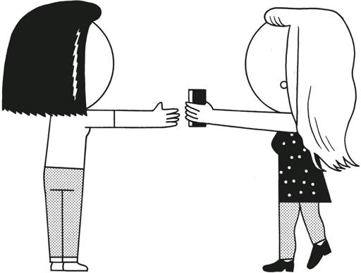
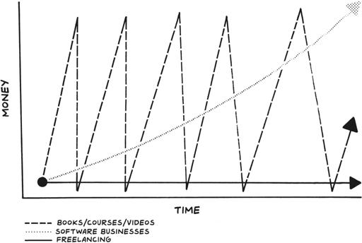
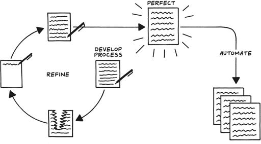
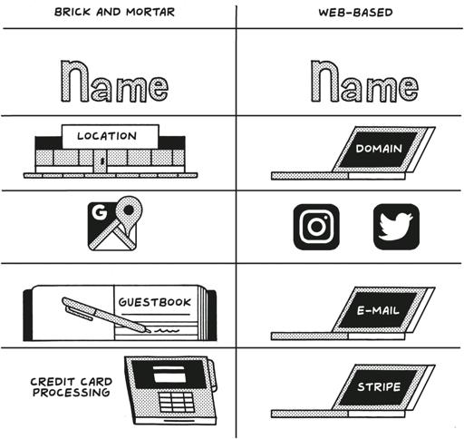

The previous chapter was all about finding a problem worth solving for people worth solving it for. In this chapter, I explain how to develop your idea and how to figure out what you need to do now versus what can wait until you’re in business. Knowledge is important, but so is momentum. You don’t want to get so in the weeds on which programming language to learn that you never start making your dream app. Especially at the beginning, minimalist entrepreneurs have to stick to what is truly essential rather than try to learn and do everything all at once.
上一章讲的是找到一个值得解决的问题，并为值得解决的人解决。在本章中，我将解释如何发展你的想法，以及如何分清现在需要做的事情与可以等到你开始营业后再做的事情。知识很重要，但动力也同样重要。你不想因为纠结于学习哪种编程语言而从未开始制作你的梦想应用程序。尤其是在开始阶段，极简主义企业家必须坚持真正必要的事情，而不是试图一次性学习和做所有事情。
While writers are often told to “write what you know,” for entrepreneurs the process isn’t so simple. When you’re starting a business, you’re often imagining something—a product, a service, a business model—that’s never been done before. That said, most successful minimalist entrepreneurs have a solid background (or interest) in one aspect of the business they’re starting even if they don’t know everything about it or exactly how to begin.
虽然作家常被告知要“写你所知”，但对于企业家来说，过程并不那么简单。当你开始一项业务时，你常常在想象一些从未做过的事情——一种产品、一项服务、一种商业模式。话虽如此，大多数成功的极简主义企业家在他们所创办的业务的某一方面都有扎实的背景（或兴趣），即使他们并不完全了解所有细节或确切的开始方式。
For me, it was designing pretty, accessible software. When the iPhone App Store launched in 2008, I was one of its first wave of developers. Not because I was determined to start a business, but because I was following my passions and curiosity.
对我来说，那是设计漂亮且易于访问的软件。当 iPhone 应用商店在 2008 年推出时，我是第一批开发者之一。这并不是因为我决心要创业，而是因为我在追随自己的激情和好奇心。
Unfortunately, in my conversations with aspiring founders, this moment is when most folks decide that building a business is not for them. They have the passion, but they let self-doubt creep in, convincing themselves that they don’t possess the hard skills they think they need, such as iOS programming or financial modeling. Let me tell you a secret. Every founder, even the most successful ones, knows nothing at the beginning, and learns from there. This is about interests, not skills. Instead of focusing on the things you do not know, focus on the things you do.
不幸的是，在我与有抱负的创始人交谈时，这一刻是大多数人决定创业不适合他们的时候。他们有激情，但让自我怀疑悄然滋生，劝说自己不具备他们认为需要的硬技能，比如 iOS 编程或财务建模。让我告诉你一个秘密。每个创始人，即使是最成功的那些，起初都一无所知，并从那里开始学习。这关乎兴趣，而不是技能。与其专注于你不知道的事情，不如专注于你会做的事情。
You do not need a team, money, or a degree to start building. You don’t need to ship or to code to make your idea come to life—at first. You might need them later, but when you are armed with a product that people truly value, these things will be easier and cheaper to acquire than you think. Often, they will find you. If your passion to solve a problem is genuine, you can overcome obstacles on your path one at a time. If you’re on a mission to serve customers, you can learn what you need to know and delegate the rest. Just figure out where your skills, knowledge, and background intersect with the business you have in mind and leverage these strengths to the hilt. Don’t get permission. Just get started.
你不需要团队、资金或学位来开始构建。起初，你不需要发布或编写代码来实现你的想法。你可能以后会需要它们，但当你拥有一个人们真正重视的产品时，这些东西会比你想象的更容易和更便宜地获得。通常，它们会找到你。如果你解决问题的热情是真诚的，你可以逐一克服道路上的障碍。如果你的使命是服务客户，你可以学习你需要知道的东西，并将其余的委托出去。只需找出你的技能、知识和背景与您心中业务的交集，并充分利用这些优势。不要寻求许可。只管开始。

Anna Gát, founder and CEO of Interintellect, was determined to build platforms where people could peacefully share their beliefs in spite of growing polarization in public intellectual and political spaces. The first inkling of the idea had come to her between Brexit and the 2016 elections in the United States. Gát felt that a great cultural shift was happening, and she was eager to be part of creating the way the world would look in the years to come. It was a bold idea, but she had accomplished a similarly challenging task several years before as cofounder of Hungary’s leading women’s rights website and events community, for which she won a Glamour Woman of the Year Award. Now she was focused on creating mediated spaces that would allow people with irreconcilable opinions to come together. Her first iteration was a platform for academics where adversarial conversation and research could take place, but within a few months, she found working with that community to be a much slower process than she had anticipated. What she was building wasn’t scalable.
Anna Gát，Interintellect 的创始人兼首席执行官，决心建立一个平台，让人们能够在日益极化的公共知识和政治空间中和平分享他们的信仰。这个想法的最初萌芽是在英国脱欧和 2016 年美国大选之间产生的。Gát 感到一场巨大的文化转变正在发生，她渴望参与塑造未来世界的模样。这是一个大胆的想法，但几年前她作为匈牙利领先的女性权利网站和活动社区的联合创始人，完成了一项同样具有挑战性的任务，并因此获得了 Glamour 年度女性奖。现在，她专注于创建调解空间，让持有不可调和观点的人们能够聚集在一起。她的第一个尝试是为学术界创建一个平台，在那里可以进行对抗性对话和研究，但几个月后，她发现与该社区合作的过程比她预期的要慢得多。她所构建的东西无法扩展。
Her second version of the product, a messaging app that would facilitate public discourse through artificial intelligence, was even more ambitious. For two years, she poured all of her energy, money, and time into building a new platform, working nights and spending every dollar she had to fund testing and development. Unfortunately, as the product moved closer to launch, many people who had said they would use the app were not as interested as they had indicated in preliminary research.
她的第二个产品版本是一个消息应用程序，旨在通过人工智能促进公共讨论，这个版本更加雄心勃勃。两年来，她倾注了所有的精力、金钱和时间来构建一个新平台，夜以继日地工作，把所有的钱都花在测试和开发上。不幸的是，随着产品接近发布，许多曾表示会使用该应用程序的人并不像他们在初步研究中所表明的那样感兴趣。
“I was hell-bent on building technology,” she says, and the whole endeavor had been so expensive and time-consuming that she was reluctant to abandon it. But in the meantime, she was organizing in-person salons where people could share their opinions and ideas. She didn’t consider these gatherings to be a business, but she knew she had inadvertently created the vibrant intellectual community she had been seeking—it was just happening through the salons rather than through the app.
“我一心想要构建技术，”她说，这整个努力过程既昂贵又耗时，以至于她不愿放弃。但与此同时，她正在组织面对面的沙龙，人们可以在这里分享他们的意见和想法。她并不认为这些聚会是一个生意，但她知道自己无意中创造了她一直在寻找的充满活力的知识社区——只不过是通过沙龙而不是通过应用程序实现的。
Her entire career had been in tech, so building a company with zero tech felt counterintuitive. She abandoned the app anyway and pursued the “grander” idea based on the energy and fun she felt in the salon community. Now Interintellect is growing sustainably and realizing her initial dreams by way of a low-tech, systematized solution that reflects what her customers want and need.
她的整个职业生涯都在科技领域，所以建立一家没有技术的公司感觉很不合常理。然而，她还是放弃了这个应用程序，追求基于她在沙龙社区中感受到的活力和乐趣的“更宏伟”想法。现在，Interintellect 正在可持续发展，通过一种低技术、系统化的解决方案实现她最初的梦想，这种解决方案反映了她的客户的需求和期望。
Later in this chapter we’ll talk more about Interintellect, but I get why so many people start with software or technology when building a business. I love it too, but it’s far too constricting at the beginning of the creative process. It makes the stakes too high, and it’s too serious, expensive, and stressful! That doesn’t mean you shouldn’t use engineering strategies to get started. It’s just that you don’t have to jump straight into coding or programming to create the processes that will power your minimalist business.
在本章后面我们会更多地谈论 Interintellect，但我理解为什么这么多人在创业时从软件或技术开始。我也喜欢它，但在创意过程的开始阶段，它限制太多。它让风险变得太高，而且太严肃、昂贵和有压力！这并不意味着你不应该使用工程策略来开始。只是你不必直接跳入编码或编程来创建将推动你极简主义业务的流程。
The world will tell you to go big or go home, but I say go small at the beginning. And the smallest you could possibly start is to build nothing at all. Instead of skipping straight to software, stick with pen and paper.
世界会告诉你要么做大要么回家，但我说一开始要小。你能开始的最小方式就是完全不建造任何东西。与其直接跳到软件，不如坚持使用纸和笔。
Start with Process
从流程开始
Every big idea was small first. If you don’t start small, if you can’t help people one by one, you will struggle to build a business around your idea. Leave your ego at the door, set aside your concerns about funding and software, and focus on your first customers, using your time and your expertise to solve real problems for real people.
每一个伟大的想法最初都是微小的。如果你不从小处开始，如果你不能一个一个地帮助人们，你将很难围绕你的想法建立一个业务。把自负放在一边，暂时抛开对资金和软件的担忧，专注于你的第一个客户，利用你的时间和专业知识为真实的人解决真实的问题。
Now that people know you, trust you, and perhaps even turn to you for expertise, it is time to start helping them in a systematic, repeatable way that allows for continuous improvement and iteration. As you fulfill the first customer cycle, document each part of the process so that with every consecutive customer you have a playbook. This document will be the true MVP of your business. I’m not talking about the minimum viable product that we’re all trying to build and to launch. I’m talking about the manual valuable process that precedes it and will be the foundation for the business you’re trying to build.
现在人们认识你、信任你，甚至可能向你寻求专业意见，是时候开始以系统化、可重复的方式帮助他们了，这种方式允许持续改进和迭代。当你完成第一个客户周期时，记录下每个过程的部分，这样每个后续客户你都有一本操作手册。这个文档将是你业务的真正 MVP。我不是在谈论我们都在努力构建和推出的最小可行产品。我说的是在此之前的手动有价值的过程，它将成为你试图建立的业务的基础。
Methodically creating this manual valuable process and recording the steps you take to complete it will help you figure out what’s working and what isn’t. It will also help you discover if you’re making something that people actually need or will buy. In his book Anything You Want, CD Baby founder Derek Sivers writes, “If you want to make a movie recommendation service, start by telling friends to call you for movie recommendations. When you find a movie your friends like, they buy you a drink. Keep track of what you recommended and how your friends liked it, and improve from there.”
系统地创建这个手册的有价值过程并记录你完成它的步骤，将帮助你找出什么是有效的，什么是无效的。这也将帮助你发现你是否在制作人们真正需要或会购买的东西。在他的书《你想要的任何东西》中，CD Baby 的创始人 Derek Sivers 写道：“如果你想做一个电影推荐服务，首先告诉朋友们打电话给你获取电影推荐。当你找到一部朋友喜欢的电影时，他们会请你喝一杯。记录下你推荐了什么以及朋友们的反应，并从中改进。”
Unfortunately, the English language does not have a word for this activity, so I made one up:
不幸的是，英语中没有一个词来描述这种活动，所以我创造了一个：
processize (verb)
过程化（动词）
to turn into a process:
转变为一个过程：
After they tested it on their friends, they processized their recommendation system.
在他们对朋友进行测试后，他们将他们的推荐系统进行了流程化。
It really should be a word in the dictionary because it is so important on the path to building a business the right way. Unfortunately, many people miss this step, falter, and ultimately fail because they go straight from problem to product before learning exactly what and how to build. But processizing is a cheap, quick discovery process that is essential. “Creating a product is a process of discovery, not mere implementation. Technology is applied science,” Naval Ravikant says.
这个词真的应该被收录到字典中，因为在正确构建业务的道路上它是如此重要。不幸的是，许多人错过了这一步，踉跄而行，最终失败，因为他们在没有确切了解要构建什么和如何构建之前，就直接从问题跳到了产品。但流程化是一个廉价、快速的发现过程，这是必不可少的。“创造产品是一个发现的过程，而不仅仅是实施。技术是应用科学，”Naval Ravikant 说。
Without processization, you may think you know what the customer actually wants, maybe even because the customer has told you what they want, and maybe even what they would pay for. But as Anna Gát can tell us, talk is cheap. Until you get through the entire process of solving the customer’s problem and (ultimately) receiving payment, you won’t know what the customer wants and is willing to pay for. You need to solve one customer’s problem reasonably well, if imperfectly, before you can scale. If it works, great. If it doesn’t, you may realize you want to scale up, but your customers couldn’t care less. If that’s the case, you may want to consider a different idea.
如果没有流程化，你可能会认为自己知道客户真正想要什么，甚至可能是因为客户告诉了你他们想要什么，甚至是他们愿意支付的东西。但正如 Anna Gát 所说，空谈无用。在你完成解决客户问题的整个过程并最终收到付款之前，你不会知道客户真正想要什么以及愿意支付什么。你需要在解决一个客户的问题时做到合理，即使不完美，然后才能扩大规模。如果有效，那就很好。如果无效，你可能会意识到自己想要扩大规模，但客户却毫不在意。如果是这种情况，你可能需要考虑一个不同的想法。
One minimalist business built on process is Endcrawl.com. For eight years, founder John “Pliny” Eremic ran a post-production company for the film industry and watched filmmakers struggle to produce the end credits that listed all of the people, places, and organizations that appeared in or contributed to the making of a film. He and his cofounder, Alan Grow, knew there had to be a better way, and the obvious answer was some kind of software to manage the endless changes and updates that made the process so painful. But they didn’t start there; instead, they set up a Google Sheet and a simple Perl script to build end credits to help them learn about their customers and validate some of their core assumptions. Their initial process looked like this:
一个基于流程的极简主义商业案例是 Endcrawl.com。八年来，创始人 John “Pliny” Eremic 经营着一家为电影行业服务的后期制作公司，他看到电影制作者在制作列出所有参与或贡献于电影制作的人员、地点和组织的片尾字幕时苦苦挣扎。他和他的联合创始人 Alan Grow 知道一定有更好的方法，显而易见的答案是某种软件来管理那些让过程变得痛苦不堪的无尽更改和更新。但他们并没有从那里开始；相反，他们设置了一个 Google 表格和一个简单的 Perl 脚本来制作片尾字幕，以帮助他们了解客户并验证他们的一些核心假设。他们的初始流程如下：
First, they gave customers a Google Sheet with their end credits formatted to their specifications.
首先，他们给客户一个 Google 表格，其中的片尾字幕按照客户的规格格式化。
Customers could edit the Google Sheet as often and as much as they like.
客户可以随时随意编辑 Google 表格。
Once customers wanted a new “render” or video output of the credits, they emailed the request.
一旦客户需要新的“渲染”或字幕的视频输出，他们就会发送电子邮件请求。
Pliny or Alan manually exported their Google Sheet to CSV.
普林尼或艾伦手动将他们的 Google 表格导出为 CSV。
Then they manually ran the CSV through the Perl script.
然后他们手动通过 Perl 脚本处理 CSV。
Next, they manually uploaded the files to Dropbox.
接下来，他们手动将文件上传到 Dropbox。
Finally, they manually emailed the customer the download link.
最后，他们手动将下载链接通过电子邮件发送给客户。
For filmmakers used to waiting up to twenty-four hours, it was a revelation that this process, even manually, took only about fifteen minutes. It also allowed the customers to control their data and to do an unlimited number of revisions for a fixed price until the credits were just right. For customers, life was just a little bit better. For Pliny and Alan, it was a chance for discovery.
对于习惯了等待长达二十四小时的电影制作人来说，这一过程即使是手动操作也只需大约十五分钟，简直是一次革命性的变化。这也让客户能够控制他们的数据，并以固定价格进行无限次修改，直到字幕完全正确。对于客户来说，生活变得稍微好了一点。对于普林尼和艾伦来说，这是一个发现的机会。
Build Last
持久构建
Even after you help your first few customers, you might not be totally sure how to solve the problem you have chosen to solve for your community, but one of the easiest ways to get started and to experiment is to freelance. Selling your time does not scale nearly as well as other types of businesses but can generate positive cash flow much sooner, giving you the breathing room to think about what comes next.
即使在帮助了最初的几个客户之后，你可能仍然不完全确定如何解决你为社区选择解决的问题，但最简单的入门和试验方法之一就是自由职业。出售你的时间不像其他类型的业务那样具有扩展性，但可以更快地产生正现金流，为你提供思考下一步的空间。

Forms of self-employment income for developers
开发人员的自雇收入形式
In my experience, many of the best minimalist businesses started out as freelance work or side projects before evolving into viable companies with potential for long-term growth. As you consider what exactly to build, there are a few routes that will get you to a profitable, sustainable business in the quickest, most efficient way. They are:
根据我的经验，许多最成功的极简主义企业最初都是从自由职业或副业项目开始的，然后逐渐发展成为具有长期增长潜力的可行公司。当你考虑具体要构建什么时，有几条路径可以让你以最快、最有效的方式建立一个盈利且可持续的业务。它们是：
Selling your knowledge and teaching people via digital content (videos, ebooks, podcasts, and courses). Lynda .com, which LinkedIn acquired in 2015, grew from a book and a series of in-person workshops led by Lynda Weinman. When the dot-com bubble burst in 2001, Lynda and her husband, Bruce Heavin, offered a subscription service to the online educational videos they made about web design, an idea that was new at the time. At first it seemed that the business would not survive, but as Lynda.com’s subscribers grew from just a few hundred to hundreds of thousands, their industry impact also expanded astronomically.
通过数字内容（视频、电子书、播客和课程）出售你的知识并教授他人。Lynda.com 是由 Lynda Weinman 创办的，从一本书和一系列面对面的研讨会开始，后来在 2015 年被 LinkedIn 收购。当 2001 年互联网泡沫破裂时，Lynda 和她的丈夫 Bruce Heavin 提供了一项订阅服务，用户可以观看他们制作的关于网页设计的在线教育视频，这在当时是一个新颖的想法。起初，这个业务似乎无法存活，但随着 Lynda.com 的订阅用户从几百人增长到数十万人，他们在行业中的影响力也呈指数级扩大。
Selling a physical product (merchandise or a unique product offering). Noxgear manufactures light-up visibility vests for runners and cyclists. The idea first came to cofounders Tom Walters and Simon Curran when they patched together a version of what would eventually become the Tracer360 for their nighttime ultimate Frisbee games. When they looked into what was available in the marketplace for early-morning and late-night athletes, they saw an opportunity, prototyped their product, and sold the first five hundred vests on Kickstarter. They’ve since added the Lighthound, a light-up harness for dogs.
销售实物产品（商品或独特产品）。Noxgear 制造用于跑步者和骑行者的发光可视背心。这个想法最初是在联合创始人 Tom Walters 和 Simon Curran 为他们的夜间飞盘游戏拼凑出一个版本时产生的，这个版本最终成为 Tracer360。当他们研究市场上为清晨和深夜运动员提供的产品时，他们看到了一个机会，制作了产品原型，并在 Kickstarter 上售出了前五百件背心。此后，他们还增加了 Lighthound，一种用于狗的发光背带。
Connecting people for a flat or percentage fee. Craig Newmark started Craigslist as an email list among his friends, highlighting local events in the San Francisco Bay Area worth checking out. Today, they are doing over $1 billion in revenue per year, with fewer than a hundred employees. But while Craigslist is the quintessential example of connecting people, there are many ways to do this. Job boards, like People First Jobs (which we discuss in chapter 7 on culture and hiring), connect companies with candidates, often charging a flat fee for doing so. And there are communities too, like Product Manager HQ, that connect like-minded folks with each other.
以固定费用或百分比费用连接人们。Craig Newmark 创办了 Craigslist，最初是他朋友之间的电子邮件列表，推荐旧金山湾区值得关注的本地活动。如今，他们每年的收入超过 10 亿美元，员工不到一百人。虽然 Craigslist 是连接人们的典型例子，但还有许多其他方式可以实现这一点。招聘网站，如 People First Jobs（我们在第 7 章关于文化和招聘中讨论过），通过收取固定费用将公司与候选人连接起来。还有一些社区，如 Product Manager HQ，将志同道合的人们连接在一起。
Software as a service (SaaS). The idea of building a software solution that would optimize remote work and minimize distractions came to Justin Mitchell and his team at Yac in 2018. In four days, they built the first iteration of what would eventually become their asynchronous voice messaging app for Product Hunt’s Makers Festival, because they saw a hole in the market for remote workers who were constantly dealing with the demands of Zoom meetings and the distraction of Slack. Although YAC’s platform, integrations, and features have grown since then, it all began with the small idea of eliminating interruptions.
软件即服务（SaaS）。2018 年，Justin Mitchell 和他的团队在 Yac 萌生了构建一个优化远程工作并最小化干扰的软件解决方案的想法。在四天内，他们为 Product Hunt 的 Makers Festival 构建了他们异步语音消息应用程序的第一个版本，因为他们看到市场上有一个空缺，远程工作者不断应对 Zoom 会议的需求和 Slack 的干扰。尽管 YAC 的平台、集成和功能自那时以来有所增长，但这一切都始于消除干扰的小想法。
In the last chapter we covered the four different kinds of economic utility: place, form, time and possession. To come up with your offering, you’ll likely overlay that list onto the list above to come up with the type of business that best solves the problem you’re trying to solve for your customers. For example, you may save people time (time utility) learning a new skill with an online, cohort-based course (digital content). Or you may build software (form utility) that automates a manual, physical process (SaaS).
在上一章中，我们讨论了四种不同类型的经济效用：地点、形式、时间和占有。为了提出你的产品，你可能会将该列表与上面的列表叠加，以找出最能解决你为客户解决的问题的业务类型。例如，你可以通过在线、基于小组的课程（数字内容）为人们节省学习新技能的时间（时间效用）。或者你可以构建软件（形式效用）来自动化手动的、物理的过程（SaaS）。
Over time, your business will likely offer two or more of these products and services, but at first, you should pick one to focus on and get started. In general, that should be the one that lets you begin today, instead of tomorrow.
随着时间的推移，您的业务可能会提供两种或更多的这些产品和服务，但一开始，您应该选择一个来专注并开始。一般来说，这应该是让您今天就能开始的那个，而不是明天。
Remember that you don’t have to know everything about what you’re doing at the beginning (or ever), and many people are wrong the first time about what they are building. The fact is, it’s very likely that you discover the kind of business you should be building as you are building another business you thought you should be building. As Adam Wathan of Tailwind UI says, “Want to find a good SaaS idea? Start a business, literally any business. You will soon realize how bad every existing tool is that you have to pay for to run that business, and you will quickly become overwhelmed by the number of things you feel you need to build yourself.”
请记住，您不必在一开始（甚至永远）就了解您正在做的一切，许多人第一次对他们正在构建的东西是错误的。事实上，您很可能在构建另一个您认为应该构建的业务时，发现您应该构建的业务类型。正如 Tailwind UI 的 Adam Wathan 所说：“想要找到一个好的 SaaS 创意吗？开始一个业务，任何业务都可以。您很快就会意识到，为了运营该业务，您不得不付费使用的每个现有工具有多糟糕，并且您会很快被您觉得需要自己构建的东西数量所淹没。”
If you make a false start, just go back, reset, and begin again. Nothing you’ve done or learned is ever wasted. A sustainable, growing business will take years to fully develop, and because you are growing as the business wishes you to, you have the time to make adjustments and learn the skills you need to know to succeed at each step. That’s because you are not doing this the unicorn way, which the venture capitalist Marc Andreessen refers to as “baking a cake in three minutes.” You are using your slow cooker to make a soup, on low heat and in full view.
如果你犯了一个错误的开始，只需返回、重置并重新开始。你所做或学到的任何东西都不会浪费。一个可持续发展的企业需要数年才能完全发展，因为你在按照企业的愿望成长，你有时间进行调整并学习在每个步骤中取得成功所需的技能。这是因为你不是在用风险投资家马克·安德森所说的“在三分钟内烤蛋糕”的独角兽方式来做这件事。你是在用慢炖锅在低温下做汤，并且全程可见。
And if you’re not rushing, you have time to talk to customers, time to iterate, and time to test your hypothesis.
如果你不着急，你就有时间与客户交谈，有时间迭代，有时间测试你的假设。
Test Your Hypothesis
测试你的假设
A business hypothesis is just like the one you learned in fifth-grade science class. It is a suggested solution for a problem that does not currently have a solution. It must be testable (able to be tested repeatedly and independently) and falsifiable (able to be proved wrong).
商业假设就像你在五年级科学课上学到的那样。它是一个针对当前没有解决方案的问题提出的建议解决方案。它必须是可测试的（能够反复和独立地进行测试）并且是可证伪的（能够被证明是错误的）。
For example: My customers will pay a fixed fee with a small premium to get their end credits quickly and efficiently produced with as many renders as they need.
例如：我的客户将支付固定费用和少量溢价，以便快速高效地制作他们的片尾字幕，并根据需要进行多次渲染。
Every business starts by testing a hypothesis with real customers. And if you only have one customer, you can treat your startup like a white-glove service. This may mean a phone call or sitting across the table from your customer at a local coffee shop, helping them with their problem.
每个企业都从与真实客户测试假设开始。如果你只有一个客户，你可以把你的创业公司当作一种高端服务来对待。这可能意味着打电话或在当地咖啡店与客户面对面坐下，帮助他们解决问题。
The goal of these meetings is to validate this hypothesis. It takes time to test and honest reflection to recognize when you are wrong. But it is better to be wrong now, when the stakes are low, than to be wrong after you have spent five years and some of your own personal capital trying to build your idea into a business that was never meant to exist.
这些会议的目的是验证这个假设。测试需要时间，而诚实的反思则有助于认识到何时出错。但最好是在风险较低的时候犯错，而不是在花费五年时间和一些个人资本试图将一个本不该存在的想法变成生意之后才发现错误。
When you are validating a hypothesis, do not ask leading questions—questions that point people to the answer you want to hear. Instead, think about creating the kind of feedback loop that author and tech entrepreneur Rob Fitzpatrick writes about in The Mom Test. When you ask the kind of questions he recommends, the kind even your mom can’t lie to you about, you will get the honest truth, because no one will know that you have a new idea for a business and that you’re testing to see if it’s viable. For example, you shouldn’t ask:
当你在验证一个假设时，不要问引导性问题——那些引导人们给出你想听的答案的问题。相反，考虑创建一种反馈循环，就像作者和科技企业家罗布·菲茨帕特里克在《妈妈测试》中写到的那样。当你问他推荐的那种问题时，即使是你妈妈也无法对你撒谎，你会得到诚实的答案，因为没有人会知道你有一个新的商业想法，并且你正在测试它是否可行。例如，你不应该问：
Would you pay for my product?
你会为我的产品付费吗？
Instead, ask:
相反，问：
Why haven’t you been able to fix this already?
为什么你还没有解决这个问题？
There are many businesses that cannot be proved in this way, but these are not the types of businesses we are interested in building. We’re aiming to build businesses that are testable at a small scale, and can then be scaled up gradually, over time.
有许多业务无法通过这种方式证明，但这些并不是我们感兴趣的业务类型。我们的目标是建立可以在小规模上进行测试的业务，然后随着时间的推移逐步扩大规模。
Another benefit of this approach: You can charge for it. If you are genuinely helping someone, you do not need to wait until you have a product to sell in order to make money. You can be paid for your time like Pliny and Alan were even before they technically had a “product.”
这种方法的另一个好处是：你可以收费。如果你真正帮助了某人，你不需要等到有产品可以出售时才赚钱。你可以像普林尼和艾伦那样在技术上拥有“产品”之前就为你的时间获得报酬。
In their case, the process they created proved their hypothesis that filmmakers would pay for a solution to the problem of trying to finish the credits. Your first idea may not go as smoothly, and that is totally okay—most experiments are wrong. You are at the frontier, literally trying to make something that does not exist yet, and you will be wrong a lot on the way to figuring out what your customers want. As long as you are working toward being right through processization, you only have to be right once.
在他们的案例中，他们创建的过程证明了他们的假设，即电影制片人愿意为解决完成片尾字幕的问题付费。你的第一个想法可能不会那么顺利，这完全没问题——大多数实验都是错误的。你处在前沿，实际上是在尝试创造尚不存在的东西，在弄清楚客户想要什么的过程中，你会犯很多错误。只要你通过流程化努力去做到正确，你只需正确一次即可。

And when you do arrive there, you will have a document that dictates your perfect process, because as you’ve walked someone through solving their problem, you’ve refined the steps it takes to get there. This process will take future customers from nothing to something. It’s something you can share (perhaps publish). You haven’t made any money. You don’t necessarily have a business yet. But you’ve provided what Paul Graham, the founder of Y Combinator among many other endeavors, calls a “quantum of utility: when there is at least some set of users who would be excited to hear about it, because they can now do something they couldn’t do before.”
当你到达那里时，你将拥有一份文件，指导你完美的流程，因为当你引导某人解决他们的问题时，你已经完善了达到目标的步骤。这个过程将把未来的客户从无到有。这是你可以分享（或许出版）的东西。你还没有赚到钱。你还不一定有一个企业。但你已经提供了保罗·格雷厄姆（Y Combinator 的创始人之一）所称的“效用量子”：至少有一组用户会对它感到兴奋，因为他们现在可以做以前做不到的事情。
Do One Thing Well
把一件事做好
Before I launched into research or coding or brand building, I picked a single problem to solve for myself and for my community of creators: selling digital files to their audiences. The basic assumption was simple, that people were starting their careers on the internet, some of them finding enormous success through social media rather than with websites and blogs. But at the end of the day, when they needed a platform to sell what they were making, they still wanted somewhere to send people and a streamlined way to deliver digital files and get paid for them.
在我开始研究、编码或品牌建设之前，我为自己和我的创作者社区选择了解决一个问题：向他们的受众销售数字文件。基本假设很简单，人们开始在互联网上开展职业生涯，其中一些人通过社交媒体而不是网站和博客取得了巨大的成功。但归根结底，当他们需要一个平台来销售他们制作的东西时，他们仍然希望有一个地方可以引导人们，并且有一个简化的方式来传递数字文件并获得报酬。
At its start, like any good product, Gumroad really only did one thing. The original Gumroad website reads:
起初，像任何好的产品一样，Gumroad 只做了一件事。最初的 Gumroad 网站上写着：
Take a file or a link of value. This can be anything. From a link to an exclusive build of an app, to a secret blog post, to an icon you spent hours designing.
拿一个有价值的文件或链接。这可以是任何东西。从一个应用程序的独家版本链接，到一个秘密博客文章，再到一个你花费数小时设计的图标。
Share it. Just like any old link. Choose your own price. You don’t have to create a store. And you don’t have to do any management.
分享它。就像任何旧链接一样。选择你自己的价格。你不必创建一个商店。你也不必进行任何管理。
Make money. And that’s it. At the end of each month we’ll deposit the money you’ve earned to your PayPal account.
赚钱。就是这样。每个月底，我们会将您赚到的钱存入您的 PayPal 账户。
If you think building an app like that is insanely complicated, it may be useful to know that most apps on the internet consist of two things: forms and lists. Twitter, for example, has a form you use to tweet (with a single input) and a list of tweets you see from people you follow.
如果您认为构建这样的应用程序非常复杂，那么了解大多数互联网应用程序由两部分组成可能会有所帮助：表单和列表。例如，Twitter 有一个用于发推文的表单（只有一个输入），以及您关注的人发布的推文列表。
These apps are referred to as CRUD apps, as they have four actions you can take: Create, Read, Update, and Delete. And Twitter doesn’t even let you edit tweets!
这些应用程序被称为 CRUD 应用程序，因为它们有四个操作：创建、读取、更新和删除。而 Twitter 甚至不允许您编辑推文！
Gumroad fit this model. At first, I let a creator create, edit, and delete products, and allowed consumers to view them (“read” them). Stripe made payments easy to take, and PayPal made it easy for payouts to be sent out (albeit manually at first).
Gumroad 符合这个模型。起初，我让创作者创建、编辑和删除产品，并允许消费者查看（“阅读”）它们。Stripe 使支付变得简单，而 PayPal 使付款的发送变得容易（尽管一开始是手动的）。
Gumroad didn’t have file uploading at the time (you had to specify a destination URL post-purchase, like a YouTube URL), and I didn’t even have automated payouts or fee calculations. That was all manual.
当时 Gumroad 没有文件上传功能（你必须在购买后指定一个目标 URL，比如 YouTube 的 URL），而且我甚至没有自动支付或费用计算功能。这一切都是手动完成的。
The whole app was twenty-seven hundred lines of mostly copy-pasted code in a single Python file, hosted on Google’s cloud. (I’ve since open-sourced the code; find the link at the end of the chapter.) But it worked! It solved the problem. So I launched. Of course, it wasn’t “ready” for the masses, but ten years later, Gumroad still doesn’t feel ready. I don’t think it ever will be.
整个应用程序是一个单一的 Python 文件，包含了大约两千七百行大部分是复制粘贴的代码，托管在谷歌的云端。（我后来将代码开源了；可以在本章末尾找到链接。）但它起作用了！它解决了问题。所以我发布了。当然，它并没有“准备好”面向大众，但十年后，Gumroad 仍然感觉没有准备好。我想它永远不会。
Wait a second, no payouts? Nope! Instead, I collected everyone’s PayPal information. At the end of every month, I made a list of everyone’s email addresses and their account balances, and paid everyone out one by one. Eventually, I started to automate bits of it. Instead of copy-pasting lines from the database, I wrote some code to download a list. Later, I wrote a script that would issue the payouts using PayPal’s API.
等一下，没有支付？没错！相反，我收集了每个人的 PayPal 信息。每个月底，我会列出每个人的电子邮件地址和他们的账户余额，然后一个一个地支付给他们。最终，我开始自动化其中的一些部分。我写了一些代码来下载一个列表，而不是从数据库中复制粘贴行。后来，我写了一个脚本，使用 PayPal 的 API 来进行支付。
There were still issues. For example, whether you made a sale on August 1 or August 30, you would still be paid out on August 31, meaning fraudsters could make a bunch of sales a few minutes right before they’re meant to be paid out, circumventing our ability to review and block the transactions. Since then we’ve added a seven-day buffer, though we got away with not having any buffer for at least a year or two.
仍然存在一些问题。例如，无论你是在 8 月 1 日还是 8 月 30 日完成销售，你都会在 8 月 31 日收到付款，这意味着欺诈者可以在他们即将收到付款的几分钟前进行大量销售，从而规避我们审核和阻止交易的能力。从那时起，我们增加了一个七天的缓冲期，尽管我们至少有一两年没有任何缓冲期。
Over time, we automated absolutely everything, which made all the difference when I needed to run the ship single-handedly. But we didn’t start there! First, I “hired” myself to do it. Then I built a process around it. Then we turned parts of it into a product, now wholly automated.
随着时间的推移，我们将一切都实现了自动化，这在我需要单独管理时起到了决定性的作用。但我们并不是从这里开始的！首先，我“雇佣”自己来做这件事。然后我围绕它建立了一个流程。接着我们将其中的一部分转化为产品，现在已经完全自动化。
What Should I Build?
我应该构建什么？
To this day, processizing is a concept we employ over and over again at Gumroad. Everything I do is listed on a piece of paper that everyone in the company can access. When I go on vacation, someone else can take over my job. And if I get hit by a bus, the company doesn’t go under. Once you have this magic piece of paper, you can turn your process into a product. We don’t have to make up a new word for this because it already exists: “productizing.”
直到今天，流程化是我们在 Gumroad 反复使用的一个概念。我所做的一切都列在一张公司每个人都可以访问的纸上。当我去度假时，其他人可以接替我的工作。如果我出了意外，公司也不会垮掉。一旦你有了这张神奇的纸，你就可以将你的流程转化为产品。我们不需要为此创造一个新词，因为它已经存在：“产品化”。
Productizing simply means developing a process into something you can sell. In the processizing stage, you created a manual valuable process for yourself and built a system for working efficiently and effectively as you helped each individual customer. Now you are ready to productize, which means that you automate each individual task so that people can sign up, use, and pay for your product without you being involved.
产品化简单来说就是将一个过程开发成可以出售的东西。在过程化阶段，你为自己创建了一个有价值的手动过程，并建立了一个系统，以便在帮助每个客户时高效和有效地工作。现在你准备好进行产品化，这意味着你要自动化每个单独的任务，以便人们可以注册、使用和支付你的产品，而无需你的参与。
If processizing is how you scale a manual process, then productizing is how you go fully automatic. Just like a brick-and-mortar business in your local community needs some essentials to get up and running, you will need to do the same for your minimalist business. And if you have to go back a few steps, don’t worry, because that’s part of the process too.
如果过程化是你扩展手动过程的方法，那么产品化就是你实现全自动化的方法。就像你所在社区的实体店需要一些基本要素来启动和运行一样，你的极简主义业务也需要这样做。如果你需要退后几步，不用担心，因为这也是过程的一部分。

Name your business. Before you can tell anyone about your product, you need a name. I like names that take two words and combine them, because I find them easier to remember than a new, made-up word. I also think they help with word of mouth because everyone will know how to spell them. This is also called a “radio test”: If someone hears your business’s name on the radio, can they find it using Google? Gumroad, Dropbox, and Facebook follow this model. But honestly, your name doesn’t matter much. Take it from the founder of Gumroad. If you’re successful, your name will feel right.
给你的企业起个名字。在你能告诉别人你的产品之前，你需要一个名字。我喜欢将两个词组合在一起的名字，因为我发现它们比一个新造的词更容易记住。我也认为它们有助于口碑传播，因为每个人都知道怎么拼写。这也被称为“广播测试”：如果有人在广播中听到你的企业名称，他们能用谷歌找到它吗？Gumroad、Dropbox 和 Facebook 都遵循这种模式。但说实话，你的名字并不重要。听听 Gumroad 创始人的意见。如果你成功了，你的名字就会显得合适。
Build a website and create an email address. The equivalent of your brick-and-mortar store is a website. To do that, you need to buy a domain; it will cost you about $10 (renewing yearly). Connect it to a website-building platform like Carrd, Gumroad, Wix, or something else. These will cost about $10 a month. Create an email address for yourself with that domain (sahil@gumroad.com, for example), as well as a password manager.
建立一个网站并创建一个电子邮件地址。你实体店的等价物是一个网站。为此，你需要购买一个域名；这大约需要花费你 10 美元（每年续费）。将其连接到一个网站建设平台，如 Carrd、Gumroad、Wix 或其他。这些大约每月花费 10 美元。用该域名为自己创建一个电子邮件地址（例如 sahil@gumroad.com），以及一个密码管理器。
Create social media accounts. You’ll need two sets of accounts, one for you personally and one for your business (you’ll see why in the chapter on marketing).
创建社交媒体账户。你需要两套账户，一套是你个人的，另一套是你企业的（在营销章节中你会明白为什么）。
Make it easy for customers to pay. Get a Square or Stripe account. These are payment processors that will help you collect credit card payments online and in person. They are free to sign up for and cost about 2.9 percent plus 30 cents per transaction. (You may want to spin up an LLC too, but I tend to wait until I have a few customers before committing.)
让客户轻松付款。注册一个 Square 或 Stripe 账户。这些是支付处理器，可以帮助您在线和线下收取信用卡付款。注册是免费的，每笔交易大约收取 2.9%的费用加 30 美分。（您可能也想成立一个有限责任公司，但我通常会等到有几个客户后再做决定。）
Now your business is ready to accept your first customer. If someone asks you what you are working on, you can give them a URL they can check out (if not checkout!). At the beginning, you should use it to explain what your product does and provide an email for folks who may be interested in such a thing, even if you do not have a product yet. You can and should always be learning and interacting with prospective customers.
现在您的业务已准备好接受第一个客户。如果有人问您在做什么，您可以给他们一个可以查看的 URL（如果不是结账的话！）。一开始，您应该用它来解释您的产品功能，并提供一个电子邮件给可能对此感兴趣的人，即使您还没有产品。您可以并且应该始终学习和与潜在客户互动。
Once you have these in place, you can start building. But what exactly to build? As little as you can. We’ll get into launching in the next chapter, but this chapter is about building. That means you need to start shipping, and shipping means you should start with almost nothing, because the job is to start delivering value for your community/customers as quickly as possible. And they don’t want to wait!
一旦这些准备就绪，您就可以开始构建了。但究竟要构建什么呢？尽可能少。我们将在下一章讨论发布，但本章是关于构建的。这意味着您需要开始交付，而交付意味着您应该从几乎没有的东西开始，因为任务是尽快为您的社区/客户提供价值。他们不想等待！
Constraints Lead to Creativity
约束带来创造力
If you’re a minimalist entrepreneur, the early stages are all about constraints. Now that you’re productizing, you have to add in more limits. In addition to your product doing just one thing (at first), there are other ways to control the temptation to try to do everything at once . . . or to try to do it perfectly.
如果你是一名极简主义企业家，早期阶段都是关于约束的。现在你正在产品化，你必须增加更多的限制。除了你的产品一开始只做一件事之外，还有其他方法可以控制尝试一次性做所有事情的诱惑……或者尝试做到完美。
I ask myself four questions every time I want to build something new:
每次我想构建新东西时，我都会问自己四个问题：
Can I ship it in a weekend? The first iteration of most solutions can and should be prototyped in two to three days.
我能在一个周末内完成吗？大多数解决方案的第一次迭代可以并且应该在两到三天内完成原型设计。
Is it making my customers lives a little better?
这是否让我的客户生活更美好一些？
Is a customer willing to pay me for it? It’s important for the business to be profitable from day one, so creating something valuable enough for people to pay for is key.
客户愿意为此付费吗？对企业来说，从第一天起就盈利很重要，因此创造出足够有价值的东西让人们愿意付费是关键。
Can I get feedback quickly? Make sure that you’re building a product for people who can let you know if you’re doing a good job or not. The faster you get feedback, the faster you’ll build something truly valuable and worth paying for.
我能快速获得反馈吗？确保你正在为那些能告诉你工作做得好不好的人构建产品。反馈越快，你就能越快构建出真正有价值且值得付费的东西。
Note that there are no constraints around how pretty the product is or how well written the code is. That’s another reason to do as little as you possibly can: to be honest with yourself about how useful your product actually is. A product that is beautiful or has great marketing behind it may feel more useful than it actually is. But if your product is incredibly minimal and useful, and people look past the lack of polish and use it, you will know you are on to something.
请注意，这里没有关于产品外观多漂亮或代码写得多好的限制。这是另一个尽可能少做的理由：诚实面对自己产品的实际用途。一个漂亮或有出色营销支持的产品可能看起来比实际更有用。但如果你的产品极其简约且实用，人们忽略其缺乏打磨而使用它，你就会知道你找对了方向。
The perfect example of this is Craigslist. It’s never been pretty, but it’s always worked so well that it didn’t matter. And it’s so useful that it’s spawned a whole world of businesses created from that model. The goal here is to build something “good enough.” Good enough to show others, and good enough for them to pay for. Which is almost always much less than you think.
这方面的完美例子就是 Craigslist。它从来没有漂亮过，但它总是运作得很好，所以这并不重要。它如此有用，以至于从这个模式中衍生出了一整个商业世界。这里的目标是建立一个“足够好”的东西。足够好到可以展示给别人，并且足够好到让他们愿意付费。而这几乎总是比你想象的要少得多。
Ryan Hoover launched Product Hunt, a site for product-loving enthusiasts to share and geek out over the latest mobile apps, websites, hardware projects, and tech creations, with an email list and Linkydink, a tool for creating collaborative daily email digests. It happened quickly. Hoover says, “Over Thanksgiving break, we designed and built Product Hunt. . . . [Five] days later, we had a very minimal but fully functional product. We emailed our supporters a link to Product Hunt, informing them not to share it publicly. The supporters were thrilled to join and play with a working version of something they had thought about and, indirectly, helped build. That day we acquired our first 30 users. By the end of the week, we had 100 users and felt ready to share Product Hunt with the world.”
Ryan Hoover 推出了 Product Hunt，这是一个供产品爱好者分享和热衷于最新移动应用、网站、硬件项目和技术创作的平台，最初是通过一个电子邮件列表和 Linkydink（一个用于创建协作每日电子邮件摘要的工具）实现的。这一切发生得很快。Hoover 说：“在感恩节假期期间，我们设计并构建了 Product Hunt……[五]天后，我们有了一个非常简约但功能齐全的产品。我们给支持者发了一封电子邮件，附上 Product Hunt 的链接，告知他们不要公开分享。支持者们很高兴能加入并体验一个他们曾经想过并间接帮助构建的工作版本。那天我们获得了我们的前 30 个用户。到周末，我们有了 100 个用户，并觉得准备好向世界分享 Product Hunt。”
From the very beginning, Product Hunt had enough momentum that Hoover realized it was a project worth pursuing. His day job building tools for game developers had given him time and space to experiment (see freelancing), and he had a clear idea of what he wanted Product Hunt to be. He knew he didn’t need to reinvent the wheel; he could use something similar to the format of Reddit. But since he wasn’t an engineer, he still found himself asking, “How am I going to build it? Who will develop it?” In the end, rather than get bogged down by those questions, he decided that the newsletter was a superquick, no-code way to get the project off the ground and build some confidence around his idea.
从一开始，Product Hunt 就有足够的动力让胡佛意识到这是一个值得追求的项目。他为游戏开发者构建工具的日常工作给了他时间和空间去尝试（参见自由职业），他对自己想要的 Product Hunt 有一个清晰的想法。他知道他不需要重新发明轮子；他可以使用类似于 Reddit 的格式。但由于他不是工程师，他仍然在问自己：“我该如何构建它？谁来开发它？”最后，他决定不被这些问题困扰，而是认为新闻通讯是一种快速、无需编码的方式，可以让项目起步，并对他的想法建立一些信心。
Like me, Ryan doesn’t believe that founders should start with code. “Do shitty work people love at first,” he says. As more and more infrastructure gets built by new businesses (including, perhaps, the one you’re working on now), it is getting cheaper, faster, and more accessible to build an MVP without code. What that means is that you shouldn’t wait until tomorrow to get started. The lower the barriers to entry, the more competition you will have.
和我一样，瑞安不认为创始人应该从代码开始。“先做一些人们一开始就喜欢的粗糙工作，”他说。随着越来越多的基础设施由新企业构建（可能包括你现在正在从事的项目），无需代码就能构建 MVP 变得更便宜、更快、更容易获得。这意味着你不应该等到明天才开始。进入的门槛越低，你将面临的竞争就越多。
The trendline is simple: democratization. Everything that a software engineer can do today, everyone can do tomorrow. It means you need to know less to do more. Even if your service is manual, or your product is physical, you will be able to take advantage of software to provide your service as efficiently as possible. Every single business is in some way tech-enabled, even though the end product may not be.
趋势线很简单：民主化。今天软件工程师能做的一切，明天每个人都能做到。这意味着你需要知道的更少，但能做的更多。即使你的服务是手动的，或者你的产品是实体的，你也可以利用软件尽可能高效地提供服务。每一个企业在某种程度上都是技术支持的，即使最终产品可能不是。
For example, if you are building a software business, you can visit Makerpad.co and learn how to connect Gumroad and Carrd to accept orders on your website without writing a single line of code. And when you are ready to automate your manual fulfillment process, it will teach you how to add Airtable and Google Forms and Mailchimp. There are products like Notion, which we use to run our entire company. And there are services like Zapier, which allow you to automate the connections between all the software you use. Seriously, check out Makerpad. You’ll be surprised how much you can build without writing a single line of code.
例如，如果你正在建立一个软件业务，你可以访问 Makerpad.co，学习如何连接 Gumroad 和 Carrd，在你的网站上接受订单，而无需编写一行代码。当你准备好自动化手动履行流程时，它会教你如何添加 Airtable、Google Forms 和 Mailchimp。还有像 Notion 这样的产品，我们用它来运营整个公司。还有像 Zapier 这样的服务，可以让你自动化使用的所有软件之间的连接。真的，去看看 Makerpad。你会惊讶于在不编写一行代码的情况下能构建多少东西。
Similar to processizing your workflow as you were helping people, these tools will let you processize and later productize the internal functions of your business itself.
类似于在帮助他人时优化你的工作流程，这些工具将使你能够优化并随后产品化你企业内部的功能。
Perhaps most important, they will save you money. The further you can get without hiring your first engineer if you are building a software product, the higher your chances of achieving profitability. And the further you get, the better the employee you can hire. (And more often than you think, these people will find you!)
也许最重要的是，它们将为你节省资金。如果你正在构建一个软件产品，越是在没有雇佣第一位工程师的情况下走得更远，你实现盈利的机会就越高。而且你走得越远，你能雇佣的员工就越优秀。（而且比你想象的更常见的是，这些人会主动找到你！）
Ship Early and Often
尽早并频繁地发布
Building a business is a lesson in fast feedback loops and iteration. Imagine if you were on a boat searching for treasure, but you could only ping your radar once a year. Then once a month. Then every day. The boat is your business, and the treasure is product-market fit.
创业是一堂关于快速反馈循环和迭代的课程。想象一下，如果你在一艘船上寻找宝藏，但你每年只能使用一次雷达。然后是每月一次。然后是每天一次。船就是你的企业，而宝藏就是产品市场契合度。
You will be wrong a lot; the goal is to get less wrong as quickly as you can. This is why shipping early and often is so important. Gumroad, for example, has never shipped a “v2” in ten years. Instead, we have shipped tens of thousands (literally) of incremental and major improvements over time. Each time, we cross the threshold for some customer from “I may want this later” to “I need this now.”
你会经常犯错；目标是尽快减少错误。这就是为什么尽早和频繁发布如此重要的原因。例如，Gumroad 在十年内从未发布过“v2”。相反，我们在这段时间内发布了成千上万（字面意思）的增量和重大改进。每次，我们都会让某些客户从“我可能以后需要”转变为“我现在就需要”。
Your goal is to move away from being paid directly for your time. This is important because your time is far more valuable than your money, and so you should almost always welcome the trade. Over time, you can improve on the exchange rate, but you should always know what it is.
你的目标是摆脱直接为时间付费的模式。这很重要，因为你的时间比金钱更有价值，因此你几乎总是应该欢迎这种交换。随着时间的推移，你可以改善交换比率，但你应该始终知道它是多少。
For example, if you are helping people for $10 an hour, you can set a goal to get to $20 an hour. You can do this by building software tools to help you do your job twice as fast, or you can increase demand for your service such that you are able to charge more. Ultimately, you will be able to make the equivalent of thousands of dollars per hour, but at the beginning you’re still learning and iterating as fast as you can. After all, what matters is not just the processes you build for your business; it’s also the processes you build for yourself.
例如，如果你以每小时 10 美元的价格帮助他人，你可以设定一个目标，将价格提高到每小时 20 美元。你可以通过构建软件工具来帮助自己以两倍的速度完成工作，或者增加对你服务的需求，以便能够收取更高的费用。最终，你将能够达到每小时相当于数千美元的收入，但在开始时，你仍在尽可能快地学习和迭代。毕竟，重要的不仅是你为业务构建的流程；还有你为自己构建的流程。
While it may seem obvious how to productize a SaaS business, productizing isn’t just about coding and software. It applies to any minimalist business, including Interintellect. Because Anna Gát processized early, Interintellect has a predictable, repeatable format based on four pillars: creating a moderated space, allowing equal speaking time for participants, promoting fun and entertainment, and establishing a patient, transparent, multidisciplinary atmosphere. The salons are organized and tracked by topic, time zone, and host, and a tight feedback loop allows the company to surface the most discussed topics in the community forum and to program events based on customer preferences.
尽管将 SaaS 业务产品化似乎显而易见，但产品化不仅仅是关于编码和软件。它适用于任何极简主义的业务，包括 Interintellect。因为 Anna Gát 早期就进行了流程化，Interintellect 基于四个支柱建立了一个可预测、可重复的格式：创建一个有主持的空间，允许参与者有平等的发言时间，促进乐趣和娱乐，并建立一个耐心、透明、多学科的氛围。沙龙按主题、时区和主持人组织和跟踪，紧密的反馈循环使公司能够在社区论坛中浮现最受讨论的话题，并根据客户偏好安排活动。
“One interesting thing you only learn in practice after doing it a thousand times,” she says, “is what you’re really making. I was convinced I was making events at the start, but I’m really making hosts.” As a result, Gát has launched a new platform that will enable hosts to build and schedule their own events and to approve, onboard, and train new hosts based on the incredibly strong set of norms by which the community abides.
“有趣的是，你只有在实践中做了一千次之后才会学到的东西，”她说，“是你真正创造的是什么。我一开始确信我是在做活动，但实际上我是在培养主持人。”因此，Gát 推出了一个新平台，使主持人能够构建和安排自己的活动，并根据社区遵循的极其强大的规范来批准、入职和培训新主持人。
As Interintellect expands, Anna expects to further automate the company’s processes so that they can host sixty events per day around the world. For her, the goal of Interintellect salons is ultimately entertainment even as she systematizes a ritual around how people congregate so that they can learn, share, and interact in an intellectually relaxed space. Even if your business doesn’t at first seem to lend itself to processizing and productizing, Interintellect is a good example of how this methodology can be applied in almost any setting.
随着 Interintellect 的扩展，安娜希望进一步自动化公司的流程，以便他们可以在全球范围内每天举办六十场活动。对她来说，Interintellect 沙龙的目标最终是娱乐，即使她在系统化人们聚集的仪式，以便他们可以在一个智力放松的空间中学习、分享和互动。即使您的业务一开始似乎不适合流程化和产品化，Interintellect 也是一个很好的例子，说明这种方法几乎可以应用于任何环境。
Create Conditions for Liftoff
创造起飞的条件
At the end of the last chapter, I talked about squashing doubts, but if you’re like 99 percent of the founders out there, doubts will be with you every step of the way, especially when you bring your product out to a community that you know and respect. Even though selling to strangers is inefficient, people are still desperate to avoid the awkwardness of telling their community what they’re working on. Sorry, but it’s still absolutely critical to start there.
在上一章的结尾，我谈到了消除疑虑，但如果你像 99%的创始人一样，疑虑会伴随你每一步，尤其是当你将产品推向你所了解和尊重的社区时。尽管向陌生人销售效率低下，人们仍然极力避免告诉他们的社区他们正在做什么的尴尬。抱歉，但从那里开始仍然绝对关键。
This self-doubt never goes away. Even when you conquer community, you’ll still have self-doubt about product. When you build and ship a product, you’ll have self-doubt about sales. When you’ve done everything mentioned in this book, you’ll have self-doubt about whether you’re qualified enough to write it all down. (Hi!)
这种自我怀疑从未消失。即使你征服了社区，你仍然会对产品产生自我怀疑。当你构建并发布产品时，你会对销售产生自我怀疑。当你完成了本书中提到的所有事情时，你会怀疑自己是否有足够的资格把这一切写下来。（嗨！）
Just get going, and keep going. Your failures will fade, while your successes will stick around and compound. You didn’t believe you’d get this far, yet the data shows that you did. Remind yourself of that as often as you need to, I certainly do.
只管开始，并坚持下去。你的失败会逐渐消失，而你的成功会留下并积累。你不相信自己能走到这一步，但数据表明你做到了。需要时就提醒自己这一点，我肯定会这样做。
We began this chapter talking about momentum. Let’s finish talking about confidence: As you build the solution you’ll sell to your first customer, you will also gain the confidence to know you’re on the right track and take the next leap forward.
我们在本章开始时谈到了动力。让我们以信心结束：当你构建将要卖给第一个客户的解决方案时，你也会获得信心，知道自己走在正确的道路上，并迈出下一步。
If you’re lucky, you may be able to get away with building almost nothing. If you’ve solved a true pain point for real people, they won’t fault the simplicity of your offering but appreciate you for it. Some will even ask to pay. This is the exciting part: You made your first dollar on the internet. You crossed the great divide from zero to one. You started.
如果你幸运的话，你可能几乎不需要构建任何东西。如果你解决了真实人群的真正痛点，他们不会责怪你产品的简单，反而会因此欣赏你。有些人甚至会要求付款。这是令人兴奋的部分：你在互联网上赚到了第一笔钱。你从零到一跨越了鸿沟。你开始了。
KEY TAKEAWAYS
关键要点
Refine a manual valuable process before building a minimum viable product.
在构建最小可行产品之前，先完善一个有价值的手动流程。
The faster the feedback loop you have with your customers, the faster you’ll get to a solution they will pay for. The fastest feedback loop will be one you have with yourself.
你与客户的反馈循环越快，你就能越快找到他们愿意付费的解决方案。最快的反馈循环是你与自己之间的。
Before you build anything at all, see how little you can get away with charging for it. Even later, build only the things you need to build. Outsource the rest.
在你构建任何东西之前，看看你能以多低的价格出售它。即使在后期，也只构建你需要构建的东西。其余的外包。
I define “product-market fit” as having repeat customers who sign up and use your product on their own so that you can start to focus on outbound sales.
我将“产品市场契合”定义为拥有重复客户，他们会自行注册并使用您的产品，这样您就可以开始专注于外部销售。
Learn More
了解更多
Read Getting Real, a free “book” about building a web app, by Basecamp, available online at https://basecamp.com/books/getting-real.
阅读《Getting Real》，这是一本关于构建网络应用的免费“书籍”，由 Basecamp 撰写，可在线访问：https://basecamp.com/books/getting-real。
Read The Mom Test, a book on how to talk—and listen—to customers, by Rob Fitzpatrick.
阅读《The Mom Test》，这是一本关于如何与客户交谈和倾听的书，由 Rob Fitzpatrick 撰写。
Browse Gumroad’s original source code, which I recently published online at https://github.com/gumroad/gumroad-v1.
浏览我最近在网上发布的 Gumroad 原始源代码，网址为 https://github.com/gumroad/gumroad-v1。
Explore Rosieland, @rosie.land, a resource for community builders created by Rosie Sherry.
探索 Rosieland，@rosie.land，这是由 Rosie Sherry 创建的社区建设者资源。
Follow Daniel Vassallo (@dvassallo) on Twitter. He made a living on Gumroad before joining as our quarter-time head of product.
在 Twitter 上关注 Daniel Vassallo (@dvassallo)。他在加入我们成为兼职产品负责人之前，曾在 Gumroad 上谋生。